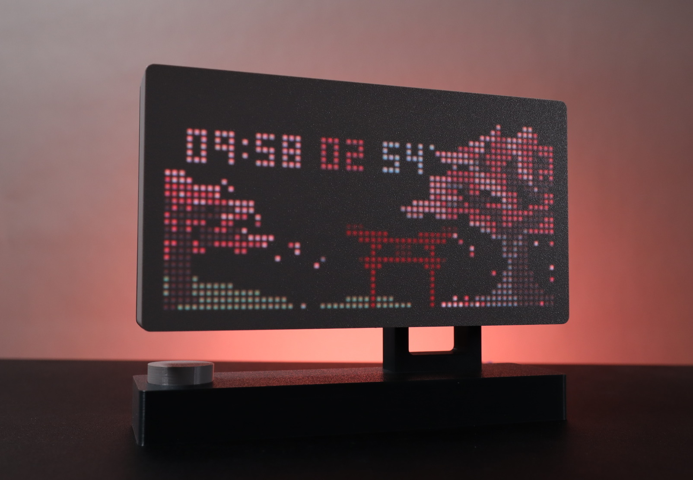
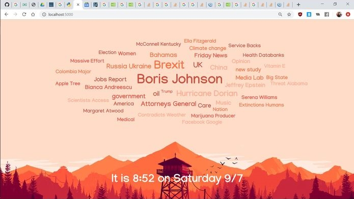
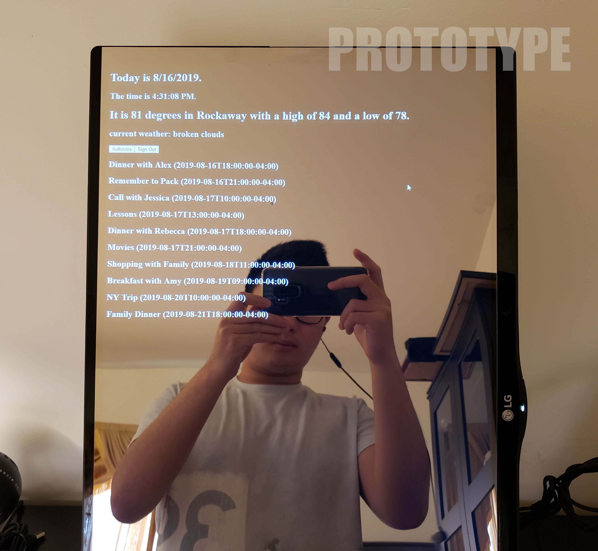
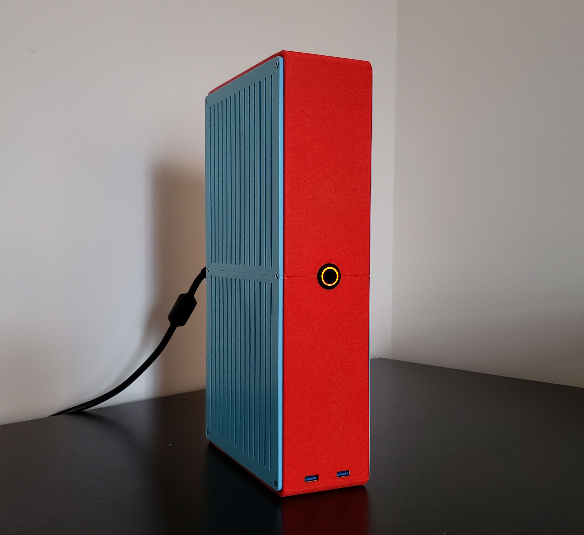
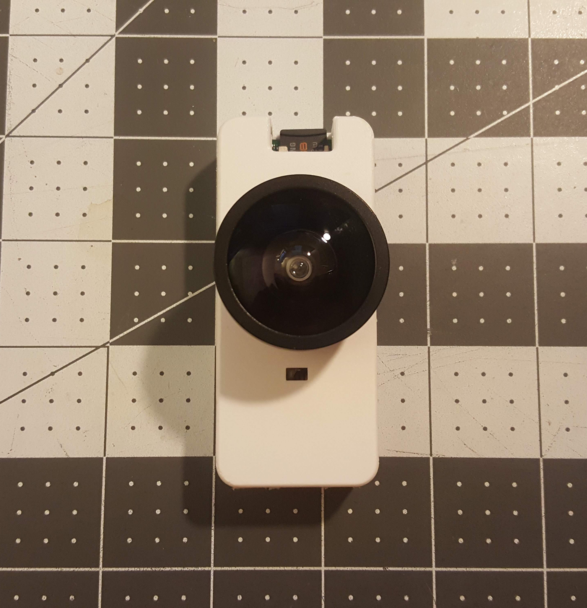
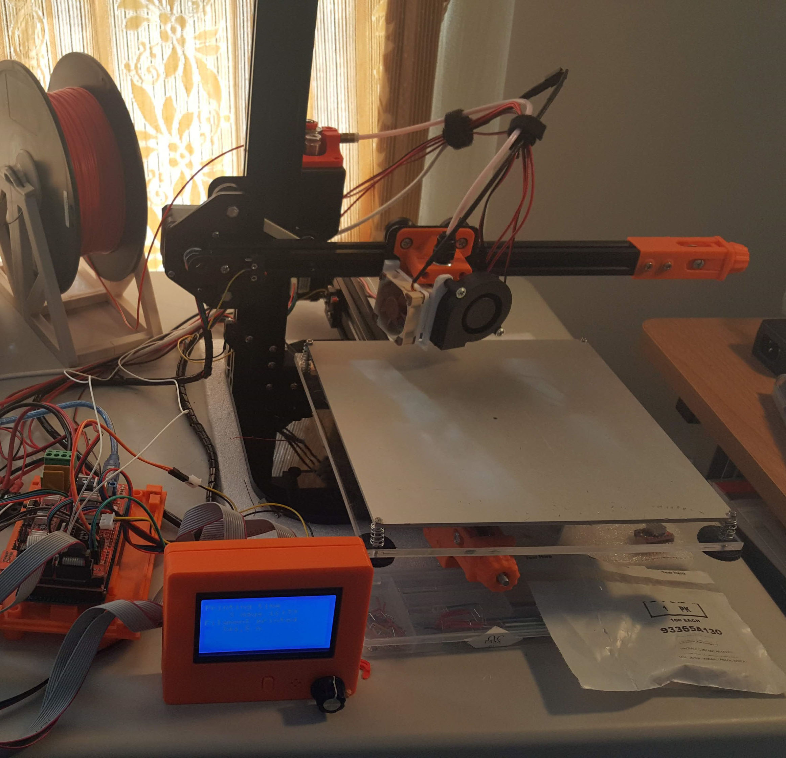

Projects
Rotary Keyboard 4 WPM!
Practicality be damned
Felt compelled to build after seeing the Gboard Dial, a practical joke of a keyboard made by Google Japan.
Instead of cheating relying on motors to simulate the behavior of a rotary dial,
I took it a step further by making it fully mechanical, designing my rotary mechanism with
3D printed springs, mechanical governor, etc.
Doesn't make it any more practical to use though...
Io v2
A humanoid(-ish) robot
Different in just about every way from the original, IO (v2) is a robot I designed to learn more about robotics like teaching myself ROS2.
Asthetically based on the machine lifeform from the game Nier Automata, IO features a fully articulating head driven by omniwheels and held down by magnets, two 4DOF arms (no hands yet), and an articulated torso.
Currently can be controlled through teleop (face tracking plus a custom built physical teleop harness for the arms).
Io v1
A robotic puppet controlled by face tracking.
Using the TrueDepth camera system of the iPhone (powers FaceID), we can track the operator's head movement and facial expressions.
These parameters are transmitted to Io and used to control positions of the 2D face as well as the articulated neck.
Current features include motion recording and playback including the facial expressions.

LED Matrix Dashboard August 2021 - March 2022
A physical dashboard featuring Notion and Spotify integration.
It provides a constant view of relevant info from basic things like time and weather to eye candy like custom gifs and patterns to productivity related stuff like todo lists to even phone notifications.
With its rotary encoder, the user can change what information is displayed as well as interface with services like Spotify for playback control.
Built around a Raspberry Pi 3B and a generic 32 x 64 LED Matrix Panel. The main logic is written in Python with a simple C program for low level control of the display.
Current Features include: Time and Weather, Phone Notifications, Notion Support, Spotify Playback Control, GIF viewer, Game of Life, and Stock Price Viewer
Links: GitHub • More Media

News Cloud September 2019
Submission for PennApps XX 2019
Chrome extension that overrides the new tab page with a word cloud automatically generated with trending phrases scrapped from various news sites.
A Flask app written in Python (for web scraping and natural language processing) and Javascript (site and word cloud generation).
Developed the word cloud generation script (written in purely Javascript) to algorithmically generate the cloud which implements various features such as text size normalization (scales all text to an ideal size for display), object collision detection (prevents any words of the cloud from overlapping), and parametric definition of cloud shape (allows for flexibility to handle different display form factors).

Mirror Mirror August 2019
A smart mirror displaying basic metrics and features Google Calendar integration.
A smart mirror is essentially a monitor behind a two way mirror which can be connected to a computing device (in this case, a Raspberry Pi) to project various information onto the mirror itself.
At the core of this smart mirror is a Raspberry Pi which runs a Javascript web app (Node.js and React.js) to display metrics such as Time and Weather as well as more advanced information such as a list of upcoming events in your Google Calendar. Weather is handled through the OpenWeatherMap API while calendar integration is handled through the Google Calendar API.
I built this smart mirror for two reasons: to familiarize myself with Javascript (and the various libraries for it) and because smart mirrors are pretty cool.
Links: GitHub

NeonSFF May 2018
A 3D printed small form factor computer case.
NeonSFF was designed to be as small as possible while still accomdating a discrete GPU and be made of mainly 3D printed parts. With the case being at just over 5 liters and over 95% PLA plastic, I would have to say that it was a success. Small enough to be easily transportable in a backpack while still being powerful enough for CAD work.
Links: GitHub • More Photos

Time Lapse Camera September 2017
3D printed Raspberry Pi based time lapse camera.
Three days before NY Maker Faire 2017, I decided it would be cool to create a time lapse of my time there. I could have used my phone to record the time lapse, but then I can't use my phone while the time lapse is running and I would need to figure out a way to mount it to my torso. I also didn't want to shell out hundreds for a GoPro either.
So I decided to build my own time lapse camera with the items I had laying around (and a quick trip to the local Microcenter). The camera is powered by a Raspberry Pi Zero and uses the Raspberry Pi Camera V2 with a cheap smartphone lens set. An enclosure was 3D printed and includes a magnetic shirt mount.
Running on the Raspberry Pi is a Python script that handles the camera and "time lapse" functionality. The camera itself does not actually create a video or gif file, but rather takes images at a specified interval. This collection of images can then be exported via SD card and stitched together into a time lapse in post.
Links: More Photos

3D Printer June 2017
A fully functional 3D Printer built from scratch.
Back in junior year of high school, I really wanted to get my hands on my own 3D printer to supplement my passion for hobby electronics and robotics. But what do you do when you want a 3D printer but you are a broke high school student? You build your own for cheaper!
Therefore, I designed my own 3D printer in Autodesk Inventor. Then I borrowed my school's makerspace for weeks afterschool to fabricate the parts. It completed its first print in June 2017, though it would take few months more of modifications to really get it to a satisfactory state.
The printer is built upon the Arduino Mega microcontroller and the RAMPS 1.4 control board running the open source Repetier firmware. The printer has a 200mm by 200mm by 150mm print space and supports a wide range of filaments with an all metal hotend and heated bed.
Having access to a personal 3D printer not only allowed me to design custom part for projects moving forward, it also made me interested in 3D printing as a hobby rather than simply as a tool.
Links: More Photos

The Artist April 2017
1st Place in 2017 NJ State TSA Competition: Animatronics Event.
The Artist was originally designed to be an automaton capable of mimicking human behavior such as blinking, gazing, and speaking. It evolved over the course of development to include speech recognition and drawing capabilities (hence the name).
As the lead programmer, I was responsible for scripting animation and audio routines for the Artist in addition to working with another member on speech recognition. Speech recognition (via the CMU Sphinx library) was used to determine the correct shape or logo to draw. Animation scripts controlled various servos and hydraulics to imitate human behavior.
Links: More Photos

Animatronic Hand April 2016
1st Place in 2016 NJ State TSA Competition: Animatronics Event.
My team decided to create an animatronic hand that mirrors the operator's hand movements in real time.
The operator wears a glove that houses flex sensors for each finger. The sensors produce an analog signal based on the degree it is flexed. These analog values are received by an Arduino which translates the analog signal into a PWM digital signal for the servos. The servos, in turn, pull the strings that control each finger of the animatronic hand.
Links: More Photos